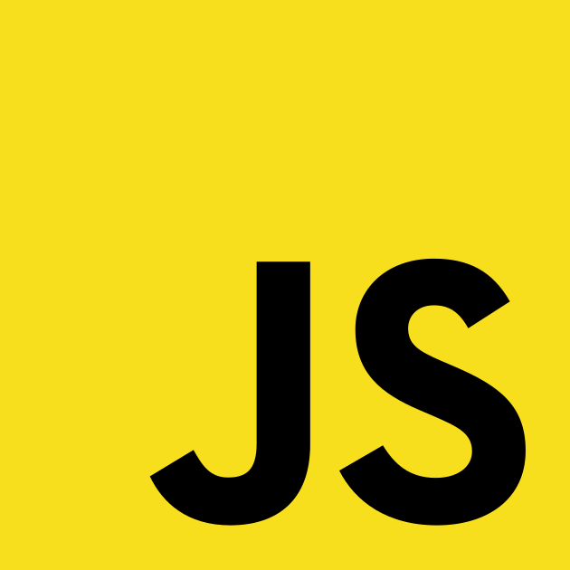
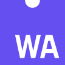
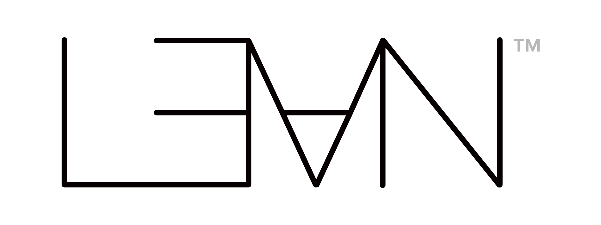

What runs where
Twelve languages, one cube. Fast ones where the maths is heavy, proof-checkers where it must be right, plain JavaScript where nobody would notice.
Meet the languages
You don't need to know them. Each one has one job.

JSthe glue. every button, every animation. quick to write, runs everywhere.
in your browser Rs
Rsfast like C, but it refuses to compile code that could crash. runs the Monte Carlo and the lab.
in your browser · WebAssemblythe oldest, closest to the metal. finds the shortest solution of the cube.
in your browser · WebAssembly C++
C++C with more tools. draws the honest error bars on every estimate.
in your browser · WebAssembly
Wanot a language you write: a tiny fast machine inside every browser. Rust, C and C++ compile to it.
in your browserpure maths as code. proves the cube's moves obey their laws, every build.
in our testslogic, not steps. you give it rules, it reasons. it picks what the oracle says.
in your browser
∀a proof checker. if Lean accepts it, the maths is right. full stop.
in our teststhe language of trading floors. one line does what takes a page elsewhere.
in our testsarray maths in symbols. checks the statistics a second, independent way.
in our teststypesetting, like LaTeX but modern. writes the paper.
the PDF 3D
3Dthe graphics card draws the 3D cube.
in your browserThe race
Same maths, same answer. Only the language changes.
one million random walks of 8 moves, same machine, median of 5 runs · same answer, to the last bit.
Every page, every device
A strong laptop gets the full show. A phone gets the same maths, lighter graphics. An old phone or save-data mode gets a calm version that still works.
desktopphoneold phone · save-data
the full tables, for engineers
| page | 🖥 desktop macOS · Windows · Linux · ChromeOS | 📱 iPhone / iPad Safari / WebKit | 📱 Android Chrome · Samsung · Firefox | 🍃 old / save-data |
|---|---|---|---|---|
| Arrival ritual | JS · SVG · Canvas 2D | same | same | reduced-motion support |
| Portal | JS · SVG · Canvas · Prolog oracle (Tau) | same | same | JS · SVG · Canvas · Prolog oracle (Tau) |
| A pattern | Rust → WASM + SIMD · C → WASM optimal solver · three.js | Rust/WASM · available SIMD · C · three.js | Rust/WASM · available SIMD · C · three.js | Rust or JS · C/WASM if supported |
| Monte Carlo | Rust → WASM + SIMD · C++ → WASM error bars | same | same | WASM or JS fallback |
| Licht | JS · Canvas 2D | same | same | JS · Canvas 2D |
| Mycelium | JS · Canvas 2D | same | same | ≤ 1,000 nodes |
| Nota · paper | Typst → PDF | same | same | same |
| Lab · proof | Lean 4 (checked in CI) | same | same | same |
| Stats | BQN (in CI) · JS | same | same | JS |
| Monte Carlo · stats | k (ngn/k, in CI) | same | same | same |
| Anatomy | C → WASM network grower · Canvas 2D | same | same | JS |
| Code gate | JS · Vercel Edge | server | server | server |
| Shared brain | JavaScript · GitHub Actions · ntfy | server | server | server |
| Tests | Haskell (group laws) · Playwright · Rust tests | CI | CI | CI |
| page | 🖥 desktop macOS · Windows · Linux · ChromeOS | 📱 iPhone / iPad Safari / WebKit | 📱 Android Chrome · Samsung · Firefox | 🍃 old / save-data |
|---|---|---|---|---|
| Portal | WebGPU + WGSL: temple, Delphi cave, 100k particles | WebGL temple | WebGL / WebGPU light | still image |
| A pattern | Rust + SIMD + threads · WAT hot loop · C two-phase solver (any scramble) | Rust + SIMD · C | Rust + SIMD · C | JS |
| Monte Carlo | WebGPU compute: millions of draws per frame | Rust + SIMD | Rust + SIMD | JS |
| Licht | full show in WGSL shaders | WebGL | WebGL, short | CSS |
| Mycelium | Rust layout · GPU glow · 100k nodes | Rust · Canvas | Rust · Canvas | JS · 1k |
| Code gate | Rust on Cloudflare Workers | server | server | server |
| Brain + spread | Cloudflare D1/KV (lasting, not 12 h) · lend-a-key Worker | server | server | server |
| Telegram | Mini App + bot | in-app (Safari engine) | in-app (Chromium) | light |
| Build | Nix (reproducible) · Haskell QuickCheck · Lighthouse ≥ 90 gate | CI | CI | CI |
Always improving SHIP FAST · THEN MAKE IT FAST
Most of this was shipped in one night, so most of the code is still JavaScript. Then, one hot path at a time, it moves to Rust, C or C++.
JavaScript 86%Rust · C · C++ 8% · the heavy mathsproofs and checks 6%
Share of code lines, 27 Nov 2026, markup and styles not counted.
Next V2 · BUILDING
v2 launches on Product Hunt.
Built with THE REAL STACK
Haskell and Lean check the move laws in CI. The k and BQN jobs verify reference statistics. The Nota page links to the paper compiled with Typst. Logo credits and licenses.